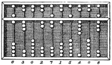

|
|
The History of ComputerThe Abacus: First Computer Abacus is the first known calculating machine used for counting, invented in Mesopotamia. It is a hand operated calculator. It is made of beads and rods that can be slide up and down. It is mostly used for addition, subtraction, multiplication and division. We first started making machines to help us counting and help us to remember the answers to the Math problems.  Analytical Engine Many historians place the origin of the modern computer with Charles Babbage, he created the mechanical engine in 1860’s, many historians call it mechanical calculator. It made of gears, levers and rods. It could be add, subtract etc. but it was not a computer. Charles Babbage called “Father of computer”. Babbage Machine called automatic electrical tabulating machine, it was used by US Census Bureau in 1890. Charles Babbage : “At each increase of knowledge, as well as on the contrivance of every new tool, human labour becomes abridged.” Table: From past to present computer generations
GEORGE BOOLE George Boole was a Mathematician, he invented the Boolean Logic. We can say that “0” and “1” of computer. Many historians accept that George Boole is father of computer science. All the computers and electronical systems include binary system of ones and zeros. George Boole invented that. The logic called “Boolean Algebra”. For example, if we search on a word with Google, the Boolean Algebra works background with search engine. ENIAC John Mauchly and others completed the ENIAC(Electronic Numerical Integrator And Computer) in Pennsylvania University in 1946. ENIAC was 1000 times faster than previous machines. It has 18.000 electronical tubes, 150 kW power; and it was 50 tons , 167 m2. It could 5.000 addition per second. It created to calculate speed of the bullets so it was created for military. With ENIAC, started transition to electronical computer. UNIVAC UNIVAC(Universal Automatic Computer) created by creators who developed ENIAC in 1951. It used from United States of America Census Bureau. The UNIVAC was the first commercial computer. It sold to General Electric in 1954, so it was the first computer in business world. UNIVAC used magnetic tapes for input-outputs, the computer was the first this area, too. |